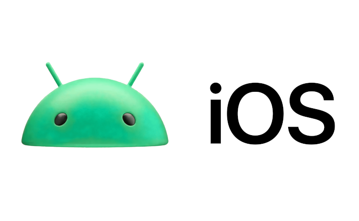
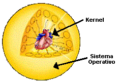

SISTEMAS OPERATIVOS
Principales Sistemas Operativos de Escritorio
Windows
Mac OS
Linux
Principales Sistemas Operativos Móviles
Android
iOS

Terminología
Sistema Operativo
Conjunto de software que controla los recursos del dispositivo.
Kernel
También conocido como núcleo, es la parte central de un sistema
operativo, en la que se apoya el resto del sistema.
